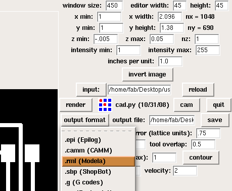
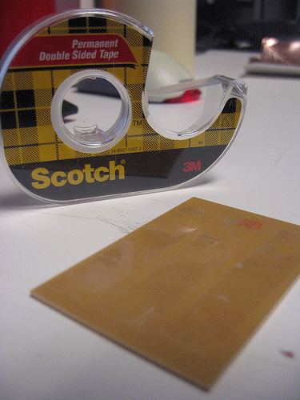
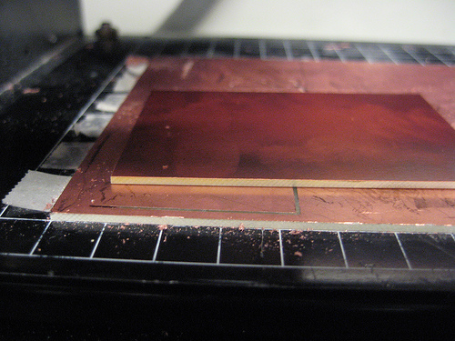
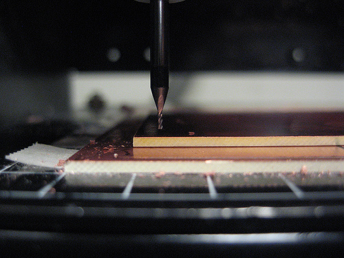
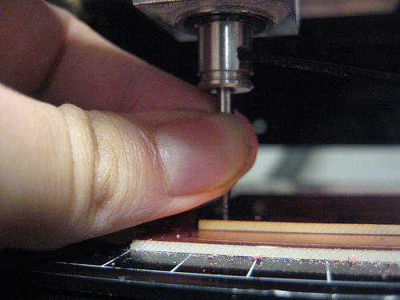

The modela is a nice little milling machine that cranks out most of the circuits you will need for HTMAA. To be able to mill on it, you need to have FR1 which is a paper based copper plate. You cannot mill the fiberglass copper plates on the modela as it will break your bit and the dust it will create is irritant. The FR1 is more tan than the fiberglass, which is more green, and the FR1 is in stock in 016 in 2x3 inch and 4x6 inch pieces.
You can either use a b/w .png with 500 resolution, which can be output by eagle, or a .cad file written for cad.py. If you are using a .png, the traces should be white and the background should be black. Do not make the edges of your board too wide, as it will just be more work for the modela to mill those out. If you need help designing the board, check out the PCB design page.

This tutorial is mainly for using your own .pngs. The .cad files for the hello boards will already have z min and max specified, you do not need to do that.
First make sure you have a sacrificial board underneath the board that you are milling. When you drill out the PCB you are making, you might go further than the actual thickness of the board. Attach the sacrificial board and the board you are milling out to the modela with double sided tape. Make sure the tape is not overlapping in any way as to not make the base for your board uneven.


The z min is how far down the bit is going to travel. When milling out the traces, this should be set to -0.005. The z max is how high the bit will go up when traversing between the drilling parts. This should be set to 0.05, or even 0.1 if you think that your piece might be more curved than usual. When you are actually milling out the whole board you can set the z min to -0.065.
The x and y min you can set depending on where you have placed the board you want to be milling on. The units are in inches measured from the front left corner of the modela when you are facing it.
Picking a bit
To mill out the traces of a circuit board you will generally want to use a 1/64th n-mill, but if you have a particularly rough circuit you might be able to get away with 1/32nd. Contour your board once with the tool diameter set to either 1/64 or 1/32 and check if all the pieces are milled correctly. If 1/32 is ok, contour as many times as you want with that, otherwise contour with 1/64th.
Putting the bit in
When you put the bit into the modela, you don't have to tighten the set screws all that much. Snug is fine. Then lower the bit as close as you can get to your copper plate but without touching it by keeping the down button pressed. If you only press the button once, the head will move the bit down exactly 7 mills.


Once you have the bit as close to the copper, loosen the set screws again and push the bit all the way onto the copper. You should hear a small tick. Then tighten the screws again. You have now set the z origin.
Now that your z origin is set and your path is calculated, you can send the job to the modela. If for some reason cad.py hung after calculating the toolpath, you can still send the .rml file that cad.py outputted by means of the following shell command: cat /out.rml/ > /dev/ttyS0/ where out.rml is the path to your file and /dev/ttyS0 is the port that the modela is hooked up to.
This is the same as sending a job for the traces, only you have to use the 1/32 bit, contour once and set the z-min to -0.065.
From: Agnes Chang's general guides
First, pause the modela immediately: hit the View button on the machine to send the head back to its resting position. Hold down the Up and Down buttons simultaneously until the view light is blinking. This indicates that the modela still has an unfinished job in queue; if you try to shut off the modela now and turn it back on, it will resume the job from where it left off.
Then stop the computer from sending the rest of the job: fire up the Terminal and type in the command
ps -aux | grep catthis will show you the process IDs of all currently-running processes that have "cat" in the name (you can find out more about any Unix command by googling, or through Wikipedia, such as the ps command page here.) In our case, cat is the process that sends print jobs to the modela. Look for its process ID, and terminate the modela job by entering
kill xxxxwhere xxxx is the process number. If you are successful in killing the job (which might take a second), the View light on the modela should stop blinking, thereby indicating that the machine is once again ready to receive a job. If you cannot kill the cat process, just restart the computer.
Vectorizing in cad.py can sometimes take a while, and if you need to restart your job because of mechanical errors such as your piece getting loose or because the power was reset mid-job, you'll want to save time by avoiding setting up twice in cad.py and simply sending the .rml file directly to the modela. You can do this by firing up the Terminal and using the following to establish the connection to the modela:
stty 9600 raw -echo crtscts -F /dev/ttyS0Use the following to move the bit head so you can set the z-depth (the modela should be in View mode):
move [xpos] [ypos]and finally use the following command to send your file
cat [filname].rml > /dev/ttyS0
In our class we had two instances of this and the problem+solutions were: